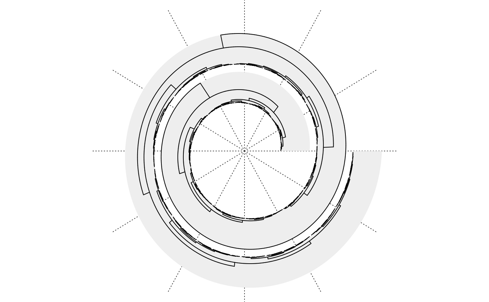

spiral_dendrogram.RdDraw dendrogram
spiral_dendrogram(dend, gp = gpar(), track_index = current_track_index())A stats::dendrogram object.
Graphics parameters of the dendrogram edges.
Index of the track.
Note the dendrogram edges can be rendered with the dendextend package.
Height of the dendrogram.
k = 500
dend = as.dendrogram(hclust(dist(runif(k))))
spiral_initialize(xlim = c(0, k), start = 360, end = 360*3)
spiral_track(height = 0.8, background_gp = gpar(fill = "#EEEEEE", col = NA))

# \donttest{
require(dendextend)
#> Loading required package: dendextend
#>
#> ---------------------
#> Welcome to dendextend version 1.17.1
#> Type citation('dendextend') for how to cite the package.
#>
#> Type browseVignettes(package = 'dendextend') for the package vignette.
#> The github page is: https://github.com/talgalili/dendextend/
#>
#> Suggestions and bug-reports can be submitted at: https://github.com/talgalili/dendextend/issues
#> You may ask questions at stackoverflow, use the r and dendextend tags:
#> https://stackoverflow.com/questions/tagged/dendextend
#>
#> To suppress this message use: suppressPackageStartupMessages(library(dendextend))
#> ---------------------
#>
#> Attaching package: ‘dendextend’
#> The following objects are masked from ‘package:ape’:
#>
#> ladderize, rotate
#> The following object is masked from ‘package:stats’:
#>
#> cutree
dend = color_branches(dend, k = 4)
spiral_initialize(xlim = c(0, k), start = 360, end = 360*3)
spiral_track(height = 0.8, background_gp = gpar(fill = "#EEEEEE", col = NA))

# }